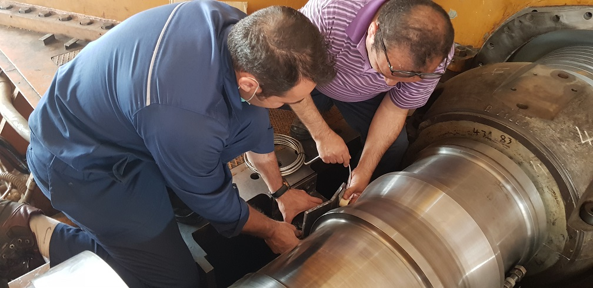
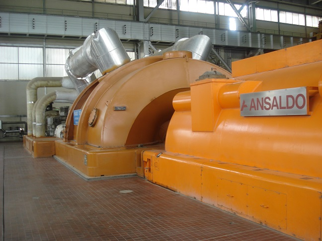
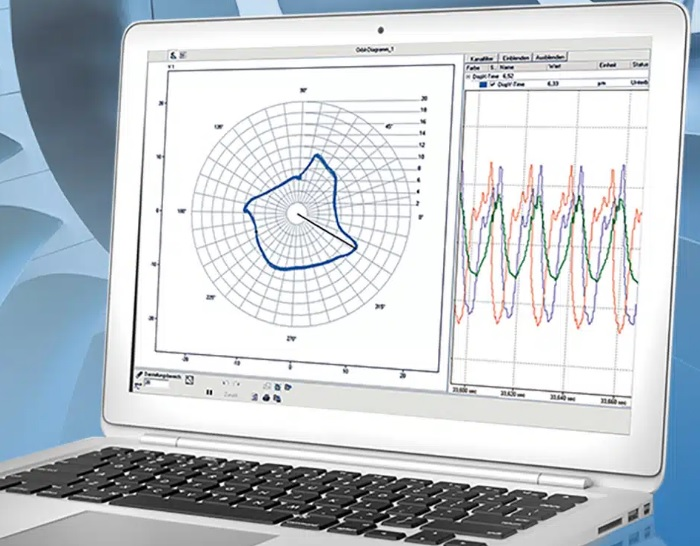
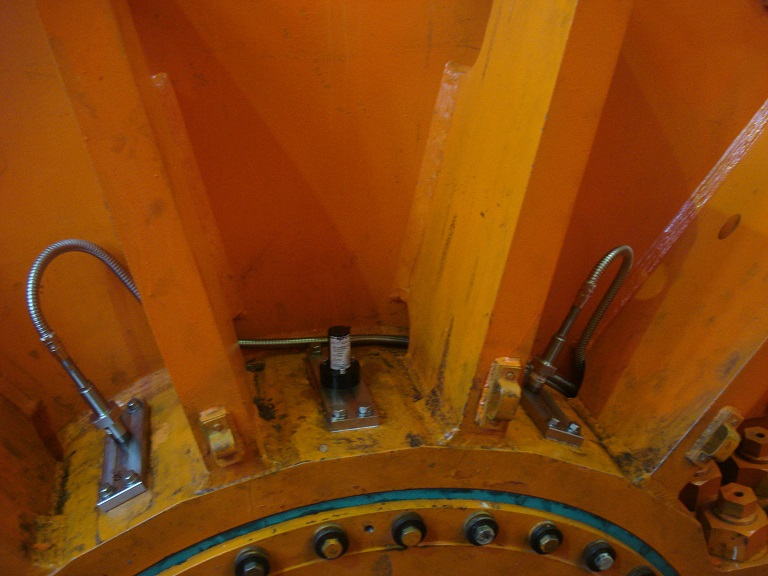
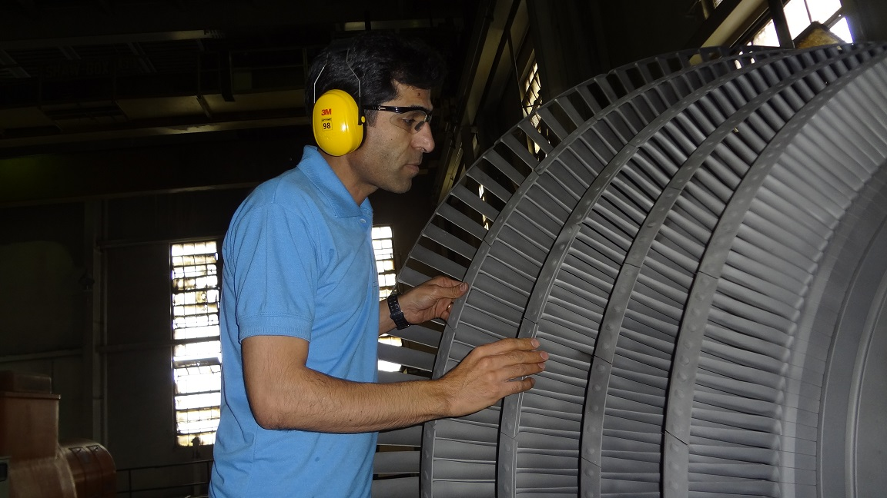
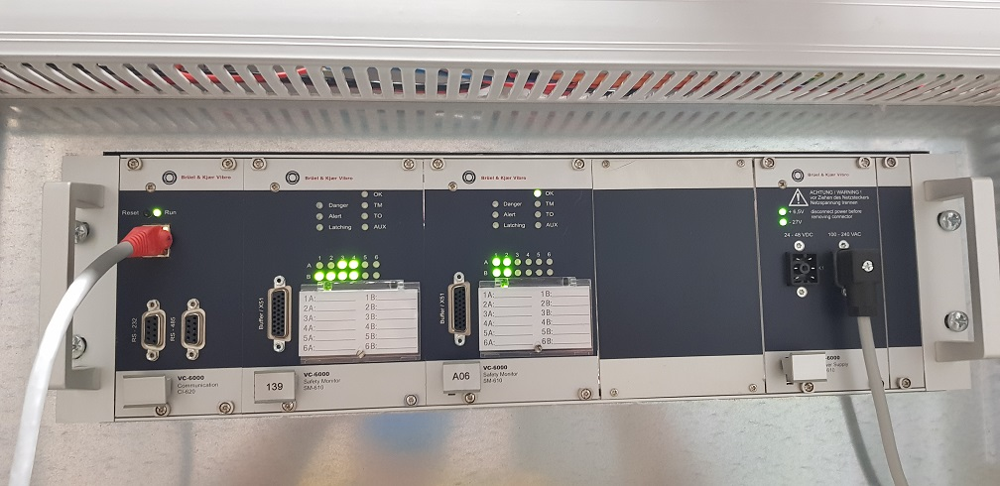
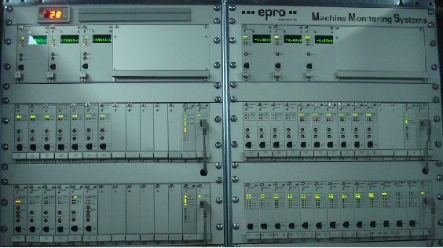
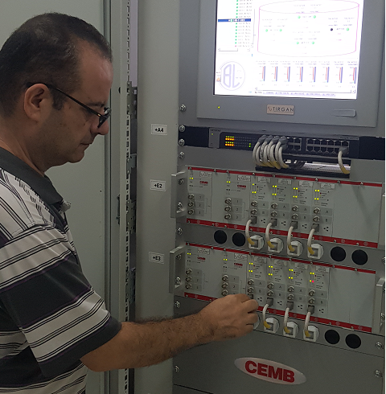

Condition Monitoring
بازگشت به صفحه اصلی

طراحی و ساخت انواع ساپورت differential Expansion و Axial position جهت نصب و تنظیم سنسور

انجام پروژه های کامل CM روی انواع ماشین روتاری

نرم افزار عیب یابی و Diagnostic جهت بررسی و تعمیرات پیشگیرانه

طراحی ، ساخت و نصب ساپورت و سنسورهای Relative Shaft Vibration

بررسی میدانی و انجام پروژه های CM روی انواع توربو کمپرسور

خدمات مهندسی و تامین کارتهای برند Bruel & Kjaer

خدمات مهندسی و تامین کارتهای برند epro 6000

خدمات مهندسی و تامین کارتهای برند Cemb